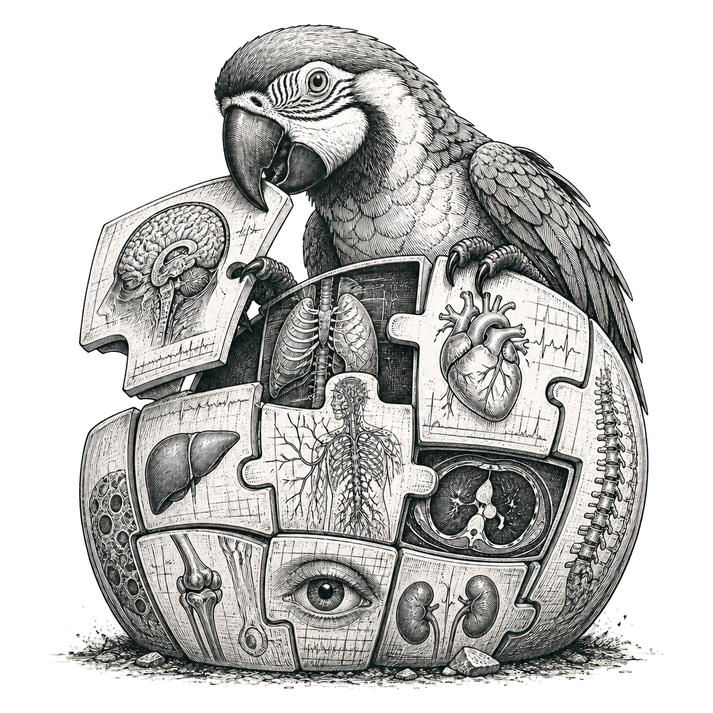

Upper-limb research tool
Waajacu's Medical
Static posture, articulated anatomy, and muscle activation.
MS-Human-700 model and methodsRight upper limb
Drag to rotate · scroll to zoom
Model details and limitations
Research model—not a diagnosis. Results are generic model estimates, not patient measurements.
Model: MS-Human-700, primary variant, running locally in MuJoCo WebAssembly. This view uses — mechanically relevant right-arm and shoulder-girdle muscles, — articulated arm bodies, and — arm surface meshes. Faint torso geometry provides attachment context; path width is illustrative.
Pose and muscle paths: each posture is realized through the model's seven independent right-arm coordinates and authored shoulder-girdle and wrist couplings. Tendon paths are recompiled from authored sites and wrapping contacts at every pose; they are not straight endpoint approximations or interpolated snapshots.
Static activation: the browser solves only the seven displayed right-arm coordinates at zero velocity and acceleration. Gravity, model self-weight, passive model forces, and 88 relevant actuators are included. The rest of the body is prescribed at its initial pose and acts as external support; this is not a whole-body equilibrium calculation.
Quality gate: activation colors appear only when all values and paths are finite, the replayed reduced-coordinate residual is at most 0.0001 N·m, reserve torque is at most 0.05 N·m, and the result is not capacity-limited under the model's rule. A rejected posture stays gray. Reserve use means the modeled actuator set did not balance that prescribed posture under these assumptions; it does not prove physiological weakness.
Loads and motion: there is no object in the hand, contact, support force, measured external load, speed, acceleration, fatigue, or subject-specific co-contraction. Dynamic motion can require materially different activation.
Interpretation: activation is a generic model control from 0–1. Active tensile-force contribution is pose-linearized model output. Neither is measured effort, patient force, tissue load, pain, damage, fatigue, diagnostic confidence, or an individual result. Shoulder joint reaction is not calculated.
Assessment workflow: the Assessment tab records self-reported movement observations and pairs postures with the same generic static model. It cannot identify a painful tissue, rule out urgent conditions, prescribe treatment, or replace assessment by a qualified clinician. A mirrored left display still uses a right-arm calculation and is labeled accordingly.
Model coverage: the solved set includes 47 arm actuators, 27 shoulder stabilizers including trapezius, serratus anterior, and levator scapula, and 14 long latissimus fascicles. The long origins participate in every solve but are hidden from the default path layer for readability. This variant has wrist controls but no articulated finger joints.
Compatibility: Loading the pinned browser runtime…
Integrity: Model assets: checking…
Local corrections: this build records two transparent bilateral coordinate-sign corrections (LTpT_T12_l and EDCL_l-P1) in the source change notice. They repair clear source-side mirror defects and are not upstream endorsements.
Use terms: original application code is MIT-licensed. MS-Human-700, generated model assets, and MuJoCo remain separately Apache-2.0 licensed; Three.js remains MIT-licensed. Apache-2.0 permits commercial redistribution under its notice and attribution terms. Preserve all required notices and source-change records; see the model license and third-party notices.
Commercial provenance: the model paper describes earlier OpenSim models as parameter references. Obtain written provenance confirmation from the maintainers before relying on the model in a commercial release.
Clinical use: this software is not a medical device and must not be used to diagnose or treat. Patient-specific clinical research would require validated patient data, uncertainty reporting, clinical ground truth, clinician oversight, and ethics or regulatory review.
Safety and method references: see NHS shoulder guidance, the systematic review of shoulder examination tests, and the MuJoCo computation documentation. These references do not validate this application for clinical use.